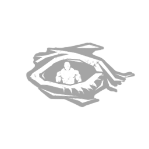
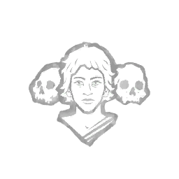
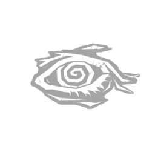
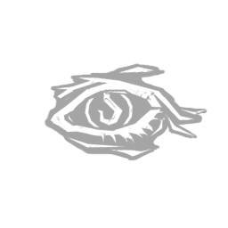
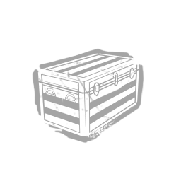
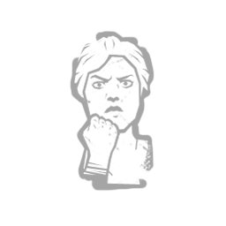
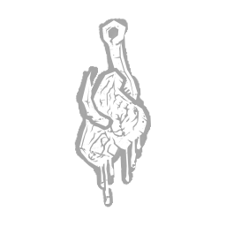
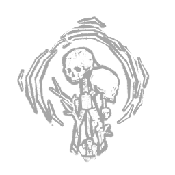
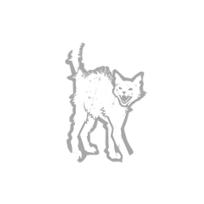

薇·蓬亚萨 Vee Boonyasak
- 性别
- 女性
- 出身
- Thai
- 演员
- Sura Siu (Voice-Over Artist)
背景故事
精力充沛的薇·布尼亚萨克从小就爱到处探险、惹是生非，但比起其他任何事，她最爱的还是打鼓。她很早就开始自学演奏。她学过传统乐器和传统曲风，却真正爱上了现代摇滚。18岁那年，她几乎听一遍 radio里的歌就能照样打出来。年轻时候，她去看了本地的一场演出，看到 Tik 与 The Kicks 的现场。她立刻爱上了这乐队那股粗野躁动的声响。Tik 的嗓音沙哑而急迫，Krit 那 Massive 的吉他音色填满了整个场地。唯一的麻烦，是那台老旧疲惫的鼓机——每首歌之间都要花上好久才能重新设定。可他们的音乐就是从她脑袋里挥之不去。 neither 有唱片也没有周边商品，想听他们的歌就只能追现场，于是她一场演出接一场地追着他们跑，琢磨着鼓机里那些被编排好的简单节拍。乐队终于等来了重大突破——为几位本地传奇人物暖场。在那座巨大却没有空调的场馆里，他们汗流浃背地做完 soundcheck，厄运却在此刻降临：鼓机发出噼啪的杂音，冒出烟来，终于一命呜呼。就在他们往面包车里搬设备的时候，薇主动提出加入他们演奏，并指出场地的鼓组已经调好音、可以直接用。反正也没什么可失去的，他们便让她上了台，观众瞬间被点燃成一片狂热。就连 Tik 和 Krit 似乎也被她张扬、喧闹的风格和无穷无尽的能量重新点燃了活力。第二天，她便成了乐队的固定成员。在一起jam了几周之……
专属技能
通用技能 任意逃生者均可使用
寻宝专家
Artefact Hunter
执念之缚
Bound by Obsession

黑暗感知
Dark Sense

坚持到底
Down to the Last

似曾相识
Déjà Vu
希望
Hope

同族
Kindred
最后站立
Last Standing
轻装上阵
Lightweight
不抛弃任何人
No One Left Behind
过度自信
Overconfidence

掠夺者直觉
Plunderer's Instinct
预兆
Premonition

韧性
Resilience

滑溜之躯
Slippery Meat

小猎手
Small Game

背脊发凉
Spine Chill
这不是真的
This Is Not Happening
硬跑者
Tough Runner
我们能行
We'll Make It
求生意志
Will to Live
附加品
- 暂无数据。